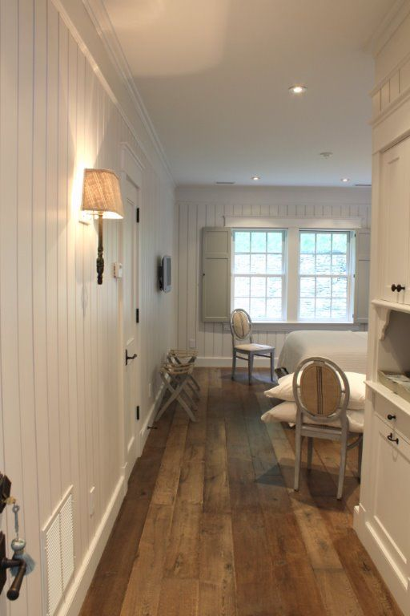
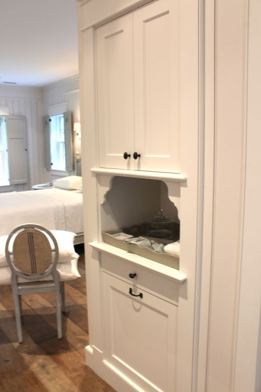
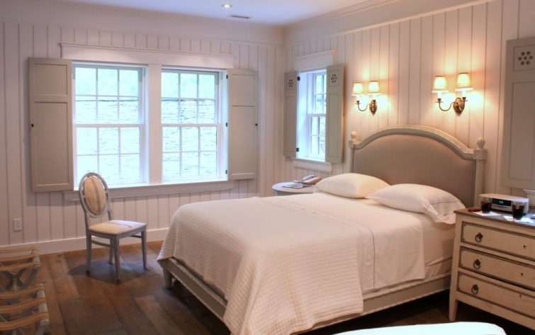

.png)
.PNG)
.PNG)
.PNG)
.PNG)
.PNG)
.JPG)
.JPG)
.PNG)
.PNG)


If you were here for the part one post, you saw all the public spaces for the Inn at Little Pond Farm from our birthday/anniversary trip my husband planned. Today I want to share some of the guest quarters with you. Now keep in mind, the public spaces were fine for photography because you can go in them at any time. The guest quarters are…well…private – unless of course, you happen to be staying in that particular room. So I will start with the room we were in . Frank’s craftsmanship and Gaye’s interior design skills are evident everywhere here, too.Our room was named Winterberry (love that name…has such a Christmas sound to it!) If you have looked at any of the rooms in our home, you know I am not a big fan of gray and white. Our rooms have color and pattern, but I loved these guest rooms because they had such a feeling of tranquility. When you are on vacation, I believe you are trying to escape the “hectic-ness” of life (or at least we were) so this style of room wraps you in a cocoon of calmness. All of the beds have European linens, and that pillow topped mattress was wonderful. I don’t normally sleep well away from home, but I slept like a baby there (of course it could have been from the hours and hours of riding in the car to get there. :))And the bathrooms…oh my gooooooodness. Talk about quality. All of the bathrooms were just beautiful…from Frank’s construction of the walls, trims, cabinets,and doors to the Waterworks fixtures to the lights to the plush towels.

 The bathtub was perfect for soaking and very deep – so deep I thought I might actually float in it!
The bathtub was perfect for soaking and very deep – so deep I thought I might actually float in it!
 The last day we were there, Gaye took me up to see other rooms in the inn. It was Labor Day and most everyone had checked out to head home – so the rooms had not been cleaned yet, but I was able to photograph most of the bathrooms. This one had a beautiful cabinet for towels and toiletries.
The last day we were there, Gaye took me up to see other rooms in the inn. It was Labor Day and most everyone had checked out to head home – so the rooms had not been cleaned yet, but I was able to photograph most of the bathrooms. This one had a beautiful cabinet for towels and toiletries.
 Double pedestal sinks were in this one…
Double pedestal sinks were in this one… And a large pedestal sink was in another one with a soaking tub.
And a large pedestal sink was in another one with a soaking tub.
Now I did not want to photograph an unmade bed that guests had just left, so I will tell you that this wall is in the room named Belledone.
 What I really want you to see is Belledone’s bathroom – heated towel bar and all.
What I really want you to see is Belledone’s bathroom – heated towel bar and all.
 Obviously, there was some master tile work done in here.
Obviously, there was some master tile work done in here. This was the downstairs powder room.
This was the downstairs powder room.

One room that was ready for guests was Meadowsweet. The shutters are bifold and can be closed to completely cover the window.

This is Meadowsweet’s bathroom with its large walk-in shower.
 This beverage area was probably my favorite space upstairs. (You know how much I love kitchens!) I am seriously thinking of painting all my brass hardware a dark bronze now.
This beverage area was probably my favorite space upstairs. (You know how much I love kitchens!) I am seriously thinking of painting all my brass hardware a dark bronze now.

The area to the left of the kitchen was a laundry room. Don’t you just love those shelves?

And then there was another laundry room in another area of the inn.
Look at how the levels of the shelves can be changed. Wasn’t that so clever (and pretty)!
And finally, I want to close our tour of The Inn at Little Pond Farm by explaining the story behind these last two photographs. My husband likes to build things, and he is very perfectionistic (not sure that is a word, but you know what I mean. :)) So while we were there, we/he talked a lot with Frank about how he built things. And of course, they talked about tools, and saws, and all things construction related. So while Gaye and I looked at finished rooms inside the inn, Frank took my husband around to see his shop and all his various woodworking tools. They would probably still be talking if we didn’t have to go home!
I climbed up the hill and wandered into his workshop too. Even I was impressed! I am not going to show you his extensive collection of woodworking equipment, but I want you to notice the craftsmanship in just the ceiling of his workshop! I was in awe. Yes, this is the workshop. And there is even a cute little bathroom out there! And notice the colors. These are more my colors. Frank told us that these were the colors that Gaye originally planned to use throughout the inn, but somewhere in the many many years of construction something changed her mind, and she went in a different direction. I am sure it would have been quite lovely too.
And there is even a cute little bathroom out there! And notice the colors. These are more my colors. Frank told us that these were the colors that Gaye originally planned to use throughout the inn, but somewhere in the many many years of construction something changed her mind, and she went in a different direction. I am sure it would have been quite lovely too.
And that, my friends, concludes our tour of the inn. I hope you have enjoyed seeing the rooms there. Wouldn’t it have been nice for us to take a field trip to see it together in person? I didn’t even mention the delicious breakfasts we enjoyed there…fresh fruit with yogurt and granola, pancakes, scrambled eggs, bacon, coffee, tea, and juice. If you are ever in Valle Crucis, Boone, or Blowing Rock, North Carolina, I hope you will have the opportunity to stay there. You can read more about the inn on their website here.

I have one more post to share with you from our trip -some food, the mountains, a very unique shop, and a number of gorgeous gorgeous houses.
Until next time…


.PNG)
[…] Source: talkofthehouse.com […]
Oh the serenity! I too am very into the whole grey and white at present. They look like they did such a good job. Calming colours and quality workmanship everywhere. Who would not want to stay there! You would not be able to get me to leave! LOL!
———————————————————————-
It was a perfect job. Both of the owners are VERY detail oriented and left nothing out. It is truly a gorgeous place to be. I’m with you Carole – it is hard to leave that place. 🙂
Kelly
Please can you tell me the brand name of the shower and tuB combination. It’s gorgeous and we are in the process of remodeling. Will be done this summer want to purchase now.
Thank you so beautiful!
——————————————————————-
Natasha, try contacting Gaye (one of the owners) at this email. She is the most knowledgeable about the inn.
Here is the site: http://ncinn.com/information.html
She should be able to answer your question.
Kelly
Stunning, the gentle details that are throughout the images. I would love to send an extended weekend or holiday at a quaint little nook such as this. It just gives you that drop the bag at the front door and stand looking in thinking “yes this is my life”
Then a few hours later the knock comes on the front door, and Mamma stands before you with a million dollar smile, eye well with tear, and the for the long overdue embrash each of you whisper into each other’s how much u have missed them and love them. Before departing from the embrace you kiss the most important woman in your life. She is offered a nice hot cup of coffee or tea, she accepts your offer and each person begins to talk about comforting dialogue. Well, that is what those images did for me.
Thank you for posting. Again beautiful!!
I love your flooring!! Can you send me a link to what brand/colour/size it is? I must have it!! Thanks in advance, Kara
———————————————————————-
Kara I am afraid it is not “our” floor. We were only guests there. If you will click on this link: http://ncinn.com/information.html
you can leave your questions for Gaye (one of the owners.) I believe they got the flooring from Europe.
Kelly
I found your website quite by accident but am glad I did! I live in NC on the coast and love to travel to the NC mountains. Two years ago I stayed at the Mast Farm Inn and decided to take a dinner class one evening at The Inn at Little Pond Farm. It was fabulous! The chef was excellent and the food was out of this world. The owners were just as you described. They were so warm and friendly and took me on a tour of all the rooms after dinner. I loved everything about it and am trying to find the time to return! Love your website too.
[…] Image Credit: talkofthehouse.com […]
Please tell me where I can find myself a gorgeous shower head like the one in the bath/shower insert. It’s GORGEOUS!
just had a pinFest!
———————————————————————-
Thanks for sharing the post on Pinterest! I am glad you liked all the photos. 🙂
Kelly
I am in blog land LOVE with this place!!! Absolutely gorgeous and so relaxing!
———————————————————————
Isn’t it beautiful?! It would be easy to be in love with the inn. You need to put it on your list of places to visit. I just got their list of cooking events through November, and they are doing a Thanksgiving dinner on Thanksgiving Day. I bet that would be great!
Kelly
The Inn at Little Pond Farm is a fabulous place and I have enjoyed many events and classes there. Get on their mailing list to find out their wonderful schedule of classes and special workshops. I just attended one about farm-to-table cooking, complete with a trip to the local Farmer’s Market with a cookbook author/chef – it was a wonderful day! Check out my post about the day “Getting Personal with Farm-to-Table Cooking” at http://www.justoffthebeatenpath.wordpress.com
———————————————————————-
A farm-to-table dinner would be a lot of fun there! Thanks for giving us your first hand opinion on the classes. I will have to read your post this weekend.
Kelly
Beautiful! You are a lucky lady, and props to such a thoughtful hubs! I’m not an inn person, but I could stay here! We never get places that are luxuriously appointed, can’t afford them. This weekend we were in Estes Park Colo. and stayed in a motel that may have been built in the 50’s. It was under new ownership, and they had new bedding and baths, but the rest was yet to be done. Oh, my, if there had been anything else available in the town, I would have moved! It was clean, but the decor – mauve drapes, rust carpets and wood with that orange-y stain and poly coat on top. Think fifties knotty pine – there ya go! Thankfully the bed was great, and the bath was new, even if the bath fan rattled and the heat lamp bulb was dangling from the ceiling! So I say again, you are lucky! BTW, we’ve honestly stayed in worse places than the last, but not since I started putting my foot down! : )
———————————————————————-
Some inns are just too cluttered and “country” for me to feel at home in. This one obviously was quite different from that. I am glad the bed was good where you stayed, and I know exactly what you mean about “putting your foot down.” I started doing that early on in our marriage, and my husband (and kids) know I have high expectations for inns and hotels. My oldest son has become the same way (but middle son is just the opposite – go figure!)
Kelly
Wow…just wow. I really loved the tile work in the bathrooms and the shutters in the rooms. Such workmanship.
Thanks for sharing this beautiful inn.
Kristi
———————————————————————-
Kristi I believe you are as impressed as I was! Those shutters have given me some inspiration for what to do with the boys’ bedroom windows (although my husband does NOT need another project. :))
Kelly
Oh Kelly,
I can’t believe their attention to detail and the quality, I’m kind of assuming the rate to stay reflects that, and believe me, I’d feel it was worth every dime. I love the wall sconces in the bathroom of the suite you stayed in. I also noticed they had little silk tassels on the key to the door. The sinks and walls and tile and beds, oh my. Were to start. So pretty, thanks again for taking us along on this great getaway.
Karen
———————————————————————
Karen, I did not think the rates were that bad. Nothing like Blackberry Farm rates. In fact, it is pretty much what we pay at other bed and breakfasts that we stay in. You noticed all the little details too. 🙂 You just need to make a trip to the South and visit all these pretty places.
Kelly
wrap it up…i’ll take it!!
LOVE every single thing. every detail is perfect and if it was mine i would probably die a hermit because i would never want to leave! thanks for sharing these amazing pics with us.
hope you’re having a great school year! we’re just into week three and already i’m looking forward to thanksgiving break. is that bad? LOL! 😉
———————————————————————
Suzy, yes I think it was perfect, too. Glad you liked it! My school year is going great! And no, it is not bad if you are looking forward to Thanksgiving break. I’m looking forward to our fall break because I have a long to-do list for the house.
Kelly
I love visiting the mountains. My aunt had a small cottage in Mountain City,GA we used to go and stay at for weekend visits. Many times we traveled the same roads as you. The mountains and Amelia Island. I think if we lived closer to each other we would be great friends. Our husbands too. My Man loves woodworking as well! Lol
———————————————————————-
I think we would be good friends too, Jayne, and most definitely traveling buddies! 🙂
Kelly
Kelly,
I do love the laundry rooms. I wish my one laundry room at home looked so organized and clean. Ours tends to be a dropping spot on the way into the house. Then when I get tired of looking at all the stuff I shove it in a cabinet, cubbie or the trash can. I can’t wait to see what else you have to show us from the trip.
————————————————————————
At least you have a laundry room, Dawn. We have a laundry closet – but I do think we can copy some of those clever ideas – like the shelves. I find that if an area is “pretty” I am more likely to do a good job of keeping it clean. Does that happen in your house too?
Kelly
So serene—ahh! With all the businest of the world— this just seemed to cleanse the soul. Reminded me of the peacefulness of the Shakers back in KY. Plain, simple and somehow just right– didn’t know there could be a place like this so uncluttered. A place to think, rest and connect with God and nature. I imagine the trees are beautiful next month which would add another layer of serenity. Is it open during the winter? Then it would be white on white with sparkle! Thank you for a refreshing tour– what I needed on this 12th year since a dark time in our history.
———————————————————————-
I had not thought about it being like the Shakers, but that is a good comparison, Louvina. I love the imagery in your comment! You should be a writer. I do believe the inn is open in the winter, and they continue with their culinary program then, too.
Kelly
To be honest, all the gray and white kind of blinded me.lol….Even on vacation, I prefer some color. I know it must be easy to keep everything clean with the white and gray. Any dirt would really show! And it would be easy to add pops of color to that palette. Love the name Winterberry!
———————————————————————
My piddly photography doesn’t convey the true beauty of it, Arlene, and you know I am no fan of gray and white. It really is lovely in person. And you are right about the cleaning – dirt would show – and Gaye and Frank are their own cleaning crew too.
Kelly
I LOVED seeing this post. I think the inn was well worth the long drive. Simply gorgeous!
———————————————————————–
Thank you Kathy. I think it was well worth the looooooong drive too!
Kelly
It’s just so serene. And those bathrooms! It’s amazing that although they are all in the same style and even the same color palette, that they are each so unique. I’ve never stayed anywhere that had such pretty laundry rooms either. Ha! Just lovely!
———————————————————————
I thought the same thing about the bathrooms being similar in materials but different in style. Those laundry rooms are my dream!
Kelly
It’s totally fabulous.
——————————————————————–
Thanks Dayle! They are totally talented!
Kelly